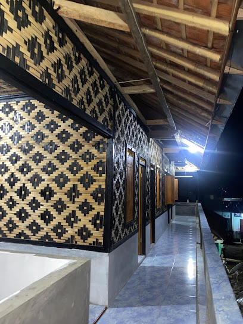

Visi kami
Menjadi pondok pesantren yang membina generasi beriman, berakhlak mulia, berilmu, mandiri, dan bermanfaat bagi masyarakat.
Selamat datang di Pondok Pesantren Darul Mutaallimin. Mari mengenal lingkungan pendidikan Islam yang mendukung tumbuhnya ilmu, akhlak, dan kemandirian santri.

Pondok Pesantren Darul Mutaallimin mendukung santri dalam mendalami ilmu agama, membangun akhlak, dan membiasakan hidup disiplin serta mandiri.
Lihat selengkapnyaBersama dalam menuntut ilmu.
Mengenal pondok, visi, dan misi pendidikan santri.
01 / MENGENAL PONDOK
Pondok Pesantren Darul Mutaallimin merupakan lembaga pendidikan Islam yang mendukung pembinaan ilmu agama, akhlak, kedisiplinan, dan kehidupan santri.
Menjadi pondok pesantren yang membina generasi beriman, berakhlak mulia, berilmu, mandiri, dan bermanfaat bagi masyarakat.
Mengenal program mingguan, bulanan, dan tahunan pondok.
02 / PROGRAM PONDOK
Kegiatan pondok dalam program mingguan, bulanan, dan tahunan.
Belum ada program bulanan yang diinformasikan.
Mengenal para pembimbing dan susunan pengurus pondok.
03 / PENGURUS PONDOK
Susunan pengurus Pondok Pesantren Darul Mutaallimin.
Pimpinan Pondok
Pengasuh Pondok Santriwan
Pengasuh Pondok Santriwan
Pengasuh Pondok Santriwan
Pengasuh Pondok Santriwati
Lurah Pondok Santriwan
Lurah Pondok Santriwati
Ruang berita dan informasi Pondok Pesantren Darul Mutaallimin.
05 / KABAR PONDOK
Berita dan informasi pondok akan ditampilkan di sini.
Silaturahmi dan konsultasi tentang pondok melalui kontak yang tersedia.
06 / HUBUNGI KAMI
Untuk informasi tentang pondok, silakan hubungi kami melalui WhatsApp atau email.
Hubungi via WhatsAppPondok Pesantren Darul Muta’allimin, Raya Muara, Blok Percobaan, Kp. Cikuning, RT 003/RW 002, Sukamaju, Kecamatan Sobang, Kabupaten Lebak, Banten 42318.
Mari terhubung. Sampaikan pertanyaan Anda tentang pondok atau temukan lokasi kami untuk bersilaturahmi.
Raya Muara, Blok Percobaan, Kp. Cikuning, RT 003/RW 002, Sukamaju, Kecamatan Sobang, Kabupaten Lebak, Banten 42318.
Buka di Google Maps ↗Jika peta tidak tampil, gunakan tautan Google Maps.